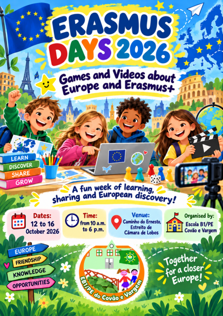
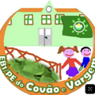

<!DOCTYPE html>
<html lang="pt-PT">
<head>
  <meta charset="UTF-8">
  <meta name="viewport" content="width=device-width, initial-scale=1.0">
  <title>Quiz Intergeracional - Erasmus Days 2026</title>
  <link rel="preconnect" href="https://fonts.googleapis.com">
  <link rel="preconnect" href="https://fonts.gstatic.com" crossorigin>
  <link href="https://fonts.googleapis.com/css2?family=Nunito:wght@700;800;900&display=swap" rel="stylesheet">
  <link rel="stylesheet" href="https://cdnjs.cloudflare.com/ajax/libs/font-awesome/6.4.0/css/all.min.css">
  <style>
    * { box-sizing: border-box; margin: 0; padding: 0; }
    body {
      font-family: 'Nunito', sans-serif;
      background: linear-gradient(135deg, #E6F4FF 0%, #F0F8FF 100%);
      color: #333;
      min-height: 100vh;
      display: flex;
      flex-direction: column;
      align-items: center;
      justify-content: center;
      padding: 20px;
    }
    .container {
      width: 100%;
      max-width: 950px;
      background: #FFFFFF;
      border-radius: 28px;
      box-shadow: 0 12px 35px rgba(0,0,0,0.12);
      padding: 35px;
      position: relative;
      overflow: hidden;
      border: 4px solid #666699;
    }
    
    .capa-layout {
      display: flex;
      gap: 35px;
      align-items: center;
    }
    .capa-col-esq {
      flex: 0 0 42%;
      max-width: 42%;
    }
    .capa-col-esq img {
      width: 100%;
      border-radius: 16px;
      box-shadow: 0 6px 20px rgba(0,0,0,0.15);
      border: 2px solid #E6E6F2;
      display: block;
    }
    .capa-col-dir {
      flex: 1;
      text-align: left;
      display: flex;
      flex-direction: column;
      justify-content: center;
    }

    .header-info {
      display: flex;
      justify-content: space-between;
      align-items: center;
      margin-bottom: 20px;
      font-weight: 800;
      color: #666699;
      font-size: 0.95rem;
    }
    .btn-inicio {
      background: #666699;
      color: white;
      border: none;
      padding: 6px 14px;
      border-radius: 15px;
      cursor: pointer;
      font-weight: 900;
      font-size: 0.85rem;
      box-shadow: 0 3px 8px rgba(102,102,153,0.3);
      transition: transform 0.1s;
    }
    .btn-inicio:active { transform: scale(0.95); }

    h1 { color: #1a4b8c; font-size: clamp(1.8rem, 2.2vw, 2.4rem); font-weight: 900; margin-bottom: 8px; }
    h2 { color: #262638; font-size: clamp(1.05rem, 1.4vw, 1.25rem); font-weight: 800; margin-bottom: 18px; line-height: 1.4; }
    p { font-size: 1.05rem; line-height: 1.5; color: #555; margin-bottom: 18px; font-weight: 700; }
    
    .btn-acao {
      background: #27ae60;
      color: white;
      border: none;
      padding: 14px 36px;
      border-radius: 12px;
      font-size: 1.25rem;
      font-weight: 900;
      cursor: pointer;
      box-shadow: 0 5px 15px rgba(39, 174, 96, 0.4);
      transition: transform 0.15s, background 0.2s;
      text-transform: uppercase;
      display: inline-block;
      text-align: center;
      width: fit-content;
    }
    .btn-acao:hover { background: #219653; }
    .btn-acao:active { transform: scale(0.96); }

    .escola-rodape-capa {
      display: flex;
      align-items: center;
      gap: 12px;
      margin-top: 25px;
      padding-top: 15px;
      border-top: 2px solid #eee;
    }
    .escola-logo {
      width: 55px;
      height: 55px;
      border-radius: 50%;
      object-fit: cover;
      border: 2px solid #8cc63f;
      flex-shrink: 0;
    }
    .escola-nome {
      font-weight: 800;
      color: #262638;
      font-size: 0.95rem;
      line-height: 1.3;
    }

    .opcoes-grid {
      display: flex;
      flex-direction: column;
      gap: 12px;
      margin-top: 20px;
    }
    .btn-opcao {
      background: #F3F3F8;
      border: 2px solid #D1D1E0;
      padding: 14px 20px;
      border-radius: 16px;
      font-size: 1.05rem;
      font-weight: 800;
      color: #262638;
      text-align: left;
      cursor: pointer;
      transition: all 0.2s;
      display: flex;
      align-items: center;
      gap: 12px;
    }
    .btn-opcao:hover {
      background: #E6E6F2;
      border-color: #666699;
      transform: translateX(4px);
    }
    .btn-opcao.correto {
      background: #E8F5E9 !important;
      border-color: #8cc63f !important;
      color: #2e7d32 !important;
    }
    .btn-opcao.errado {
      background: #FFEBEE !important;
      border-color: #ff5a5f !important;
      color: #c62828 !important;
    }

    .feedback-box {
      margin-top: 20px;
      padding: 20px;
      border-radius: 16px;
      font-weight: 800;
      display: none;
      animation: popIn 0.3s ease;
    }
    .feedback-box.sucesso { background: #E8F5E9; color: #2e7d32; border: 2px solid #8cc63f; }
    .feedback-box.erro { background: #FFEBEE; color: #c62828; border: 2px solid #ff5a5f; }
    
    @keyframes popIn {
      0% { transform: scale(0.9); opacity: 0; }
      100% { transform: scale(1); opacity: 1; }
    }

    .footer-escola {
      margin-top: 25px;
      font-size: 0.85rem;
      font-weight: 800;
      color: #888;
      border-top: 1px solid #eee;
      padding-top: 12px;
      text-align: center;
    }

    @media (max-width: 768px) {
      .capa-layout { flex-direction: column; }
      .capa-col-esq { flex: 1; max-width: 100%; }
    }
  </style>
</head>
<body>

  <div class="container" id="app-container"></div>

  <script>
    const quizData = [
      {
        pergunta: "Qual é uma das principais finalidades do programa Erasmus+?",
        opcoes: [
          { texto: "Promover aprendizagem, mobilidade e cooperação na Europa", correto: true },
          { texto: "Organizar apenas competições desportivas profissionais", correto: false },
          { texto: "Substituir as escolas nacionais por escolas europeias", correto: false },
          { texto: "Financiar exclusivamente viagens turísticas", correto: false }
        ],
        explicacao: "O Erasmus+ apoia aprendizagem, mobilidade, cooperação e partilha entre pessoas e organizações europeias."
      },
      {
        pergunta: "Quantas estrelas existem na bandeira da União Europeia?",
        opcoes: [
          { texto: "10", correto: false },
          { texto: "12", correto: true },
          { texto: "27", correto: false },
          { texto: "30", correto: false }
        ],
        explicacao: "A bandeira europeia tem 12 estrelas douradas em círculo. Este número é simbólico e não muda com o número de países."
      },
      {
        pergunta: "O que significa aprendizagem intergeracional?",
        opcoes: [
          { texto: "Pessoas de diferentes idades aprenderem umas com as outras", correto: true },
          { texto: "Crianças aprenderem apenas com outras crianças", correto: false },
          { texto: "Adultos estudarem sempre sozinhos", correto: false },
          { texto: "Separar jovens e adultos durante as atividades", correto: false }
        ],
        explicacao: "A aprendizagem intergeracional acontece quando crianças, jovens e adultos partilham saberes, experiências e competências."
      },
      {
        pergunta: "Nos jogos dos Erasmus Days, porque é importante convidar adultos da comunidade?",
        opcoes: [
          { texto: "Para apoiar os alunos, partilhar experiências e aprender também com eles", correto: true },
          { texto: "Para fazerem tudo pelos alunos", correto: false },
          { texto: "Para decidir todas as respostas sem diálogo", correto: false },
          { texto: "Para substituir completamente os professores", correto: false }
        ],
        explicacao: "A presença dos adultos fortalece a partilha, a colaboração e a ligação entre escola, famílias e comunidade."
      },
      {
        pergunta: "Qual destas frases corresponde ao lema da União Europeia?",
        opcoes: [
          { texto: "Unida na diversidade", correto: true },
          { texto: "Uma língua para toda a Europa", correto: false },
          { texto: "Um país, uma cultura", correto: false },
          { texto: "Viajar sem aprender", correto: false }
        ],
        explicacao: "“Unida na diversidade” valoriza a cooperação entre povos, culturas e línguas diferentes."
      },
      {
        pergunta: "Que atitude ajuda mais uma equipa durante um jogo intergeracional?",
        opcoes: [
          { texto: "Ouvir todos, respeitar as ideias e cooperar", correto: true },
          { texto: "Só deixar os adultos responderem", correto: false },
          { texto: "Gozar com quem erra", correto: false },
          { texto: "Ignorar quem pensa de forma diferente", correto: false }
        ],
        explicacao: "A cooperação, a escuta e o respeito tornam a aprendizagem mais inclusiva e divertida para todos."
      },
      {
        pergunta: "O que podemos descobrir através de jogos e vídeos sobre a Europa?",
        opcoes: [
          { texto: "Países, culturas, valores europeus e oportunidades de cooperação", correto: true },
          { texto: "Apenas os nomes das capitais", correto: false },
          { texto: "Só resultados de futebol", correto: false },
          { texto: "Que todos os países têm a mesma cultura", correto: false }
        ],
        explicacao: "Jogos e vídeos podem ajudar a conhecer melhor a diversidade cultural, a cidadania europeia e as oportunidades Erasmus+."
      },
      {
        pergunta: "Qual destas opções mostra melhor inclusão e diversidade?",
        opcoes: [
          { texto: "Todos participam, independentemente da idade, origem ou capacidades", correto: true },
          { texto: "Só participa quem sabe tudo sobre a Europa", correto: false },
          { texto: "As equipas devem ter apenas pessoas da mesma idade", correto: false },
          { texto: "Quem erra fica fora do jogo", correto: false }
        ],
        explicacao: "A inclusão significa criar condições para que todos participem e se sintam valorizados."
      },
      {
        pergunta: "Numa atividade Erasmus Days, que podem os alunos ensinar aos adultos?",
        opcoes: [
          { texto: "Competências digitais, criatividade e novas formas de ver o mundo", correto: true },
          { texto: "Nada, porque só os adultos ensinam", correto: false },
          { texto: "A não trabalhar em equipa", correto: false },
          { texto: "A evitar a participação", correto: false }
        ],
        explicacao: "A aprendizagem intergeracional é uma troca: adultos ensinam, mas também aprendem com as crianças e os jovens."
      },
      {
        pergunta: "Qual é a melhor mensagem para esta semana de atividades?",
        opcoes: [
          { texto: "Juntos por uma Europa mais próxima, inclusiva e participativa", correto: true },
          { texto: "Cada geração aprende sozinha", correto: false },
          { texto: "A Europa é apenas um mapa", correto: false },
          { texto: "Os jogos não ajudam a aprender", correto: false }
        ],
        explicacao: "A semana celebra a participação, a amizade, a partilha entre gerações e o sentimento de pertença à Europa."
      }
    ];

    let indiceAtual = 0;
    let opcoesBaralhadas = [];

    function renderCapa() {
      const app = document.getElementById('app-container');
      app.innerHTML = `
        <div class="capa-layout">
          <div class="capa-col-esq">
            
          </div>
          <div class="capa-col-dir">
            <h1>Quiz Intergeracional</h1>
            <h2>Europa, Erasmus+ e aprendizagem entre gerações</h2>
            <p>Para jogar com crianças, jovens e adultos durante os Erasmus Days.</p>
            <p style="font-size: 0.95rem; color: #1a4b8c; margin-bottom: 20px;"><strong>10 perguntas • escolha a resposta clicando nos botões</strong></p>
            
            <button class="btn-acao" onclick="iniciarQuiz()">COMEÇAR ▶</button>
            
            <p style="font-style: italic; font-size: 0.95rem; margin-top: 20px; color: #666;">Ideal para equipas mistas: alunos + adultos convidados.</p>

            <div class="escola-rodape-capa">
              
              <div class="escola-nome">Escola B1/PE<br>Covão e Vargem</div>
            </div>
          </div>
        </div>
      `;
    }

    function iniciarQuiz() {
      indiceAtual = 0;
      renderPergunta();
    }

    function renderPergunta() {
      const q = quizData[indiceAtual];
      const app = document.getElementById('app-container');
      
      // Baralhar as opções aleatoriamente sempre que a pergunta é carregada
      opcoesBaralhadas = [...q.opcoes].sort(() => Math.random() - 0.5);

      let opcoesHtml = '';
      opcoesBaralhadas.forEach((op, index) => {
        opcoesHtml += `<button class="btn-opcao" id="op-${index}" onclick="verificarResposta(${index})">${op.texto}</button>`;
      });

      app.innerHTML = `
        <div class="header-info">
          <span>Pergunta ${indiceAtual + 1} de ${quizData.length}</span>
          <button class="btn-inicio" onclick="renderCapa()"><i class="fas fa-home"></i> Início</button>
        </div>
        <h2 style="color: #1a4b8c; font-size: 1.3rem; margin-bottom: 20px;">${q.pergunta}</h2>
        <div class="opcoes-grid" id="grid-opcoes">
          ${opcoesHtml}
        </div>
        <div id="feedback-card" class="feedback-box"></div>
        <div class="footer-escola">Erasmus Days 2026 • Escola B1/PE Covão e Vargem</div>
      `;
    }

    function verificarResposta(indexSelecionado) {
      const q = quizData[indiceAtual];
      const botoes = document.querySelectorAll('.btn-opcao');
      
      botoes.forEach(b => b.style.pointerEvents = 'none');

      const feedbackCard = document.getElementById('feedback-card');
      feedbackCard.style.display = 'block';

      if (opcoesBaralhadas[indexSelecionado].correto) {
        document.getElementById(`op-${indexSelecionado}`).classList.add('correto');
        feedbackCard.className = 'feedback-box sucesso';
        feedbackCard.innerHTML = `
          <strong>✅ Correto!</strong><br>${q.explicacao}<br><br>
          <button class="btn-acao" style="padding: 10px 24px; font-size: 1rem;" onclick="proximaPergunta()">${indiceAtual === quizData.length - 1 ? 'Ver Resultado Final' : 'Próxima Pergunta ▶'}</button>
        `;
      } else {
        document.getElementById(`op-${indexSelecionado}`).classList.add('errado');
        // Destacar também qual era a opção correta
        opcoesBaralhadas.forEach((op, i) => { if (op.correto) document.getElementById(`op-${i}`).classList.add('correto'); });

        feedbackCard.className = 'feedback-box erro';
        feedbackCard.innerHTML = `
          <strong>🔄 Tenta novamente!</strong><br>Conversem mais um pouco em equipa. Lembrem-se: todos podem ajudar a pensar na resposta.<br><br>
          <button class="btn-acao" style="padding: 10px 24px; font-size: 1rem; background: #666699; box-shadow: 0 4px 12px rgba(102,102,153,0.3);" onclick="renderPergunta()">Voltar à Pergunta ↩</button>
        `;
      }
    }

    function proximaPergunta() {
      indiceAtual++;
      if (indiceAtual < quizData.length) {
        renderPergunta();
      } else {
        renderFim();
      }
    }

    function renderFim() {
      const app = document.getElementById('app-container');
      app.innerHTML = `
        <div style="text-align: center; padding: 20px;">
          <div style="font-size: 3.5rem; color: #8cc63f; margin-bottom: 10px;"><i class="fas fa-trophy"></i></div>
          <h1 style="color: #1a4b8c; margin-bottom: 15px;">Fim do Quiz!</h1>
          <p style="font-size: 1.15rem; margin-bottom: 15px;">Parabéns a todos pela participação. Hoje aprendemos que a Europa se constrói com cooperação, diversidade, inclusão e partilha entre gerações.</p>
          <p style="font-weight: 900; color: #666699; font-size: 1.2rem; margin-bottom: 25px;">Juntos por uma Europa mais próxima!</p>
          <button class="btn-acao" onclick="renderCapa()">Voltar ao Início</button>
        </div>
        <div class="footer-escola" style="margin-top: 30px;">Erasmus Days 2026 • Escola B1/PE Covão e Vargem</div>
      `;
    }

    renderCapa();
  </script>
</body>
</html>
